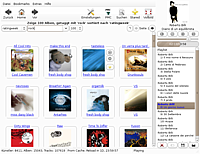
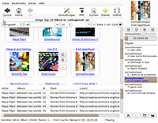
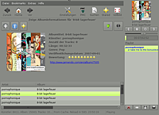

Pyjama
Archivierte Anleitung
Dieser Artikel wurde archiviert, da er - oder Teile daraus - nur noch unter einer älteren Ubuntu-Version nutzbar ist. Diese Anleitung wird vom Wiki-Team weder auf Richtigkeit überprüft noch anderweitig gepflegt. Zusätzlich wurde der Artikel für weitere Änderungen gesperrt.
Zum Verständnis dieses Artikels sind folgende Seiten hilfreich:
Pyjama  (Python Jamendo Audiocenter) ist ein Audioplayer für Jamendo
(Python Jamendo Audiocenter) ist ein Audioplayer für Jamendo  , einer bekannten Plattform, auf der Musiker ihre Musik unter eine freie Lizenz stellen und so Jedem frei zugänglich machen. Pyjama benutzt parallel die von Jamendo abgestellte API und eine lokal gespiegelte Datenbank, um die verschiedenen Künstler, Alben und Musikstücke auf dem Linux-Desktop abzuspielen.
, einer bekannten Plattform, auf der Musiker ihre Musik unter eine freie Lizenz stellen und so Jedem frei zugänglich machen. Pyjama benutzt parallel die von Jamendo abgestellte API und eine lokal gespiegelte Datenbank, um die verschiedenen Künstler, Alben und Musikstücke auf dem Linux-Desktop abzuspielen.
Installation¶
Pyjama kann auf verschiedene Art installiert werden; die einfachste ist sicher die Installation des entsprechenden Paketes, etwas aufwändiger aber aktueller ist in der Regel das Beziehen der Quelldateien aus dem Versionsverwaltungssystem Bazaar.
Paketinstallation¶
Pyjama kann von launchpad bezogen werden. Nachdem das Paket auf dem Rechner gespeichert wurde, kann das .deb-Paket wie üblich installiert werden.[1]
Fehlende Abhängigkeiten in Lucid Lynx (10.04)¶
Unter Lucid Lynx bemängelt die Paketverwaltung das Fehlen von python-gtkhtml2, welches zwar von anderen Paketen referenziert, nicht aber im Paketpool vorhanden ist. Abhilfe schafft ein manuelles Nachinstallieren; Informationen zum Bezug des Pakets findet man in diesem Bugreport-Kommentar .
Hinweis!
Fremdpakete können das System gefährden.
Manuelle Installation¶
Für alle Varianten gilt, dass folgende Pakete installiert sein/werden müssen [1]: 
python-simplejson
libsqlite3-0
python-libxml2
python-gst0.10
gstreamer0.10-plugins-bad
gstreamer0.10-plugins-base
gstreamer0.10-plugins-good
 mit apturl
mit apturl
Paketliste zum Kopieren:
sudo apt-get install python-simplejson libsqlite3-0 python-libxml2 python-gst0.10 gstreamer0.10-plugins-bad gstreamer0.10-plugins-base gstreamer0.10-plugins-good
sudo aptitude install python-simplejson libsqlite3-0 python-libxml2 python-gst0.10 gstreamer0.10-plugins-bad gstreamer0.10-plugins-base gstreamer0.10-plugins-good
Ein Großteil dieser Pakete ist auf den meisten GNOME-Systemen von Haus aus installiert. Statt libsqlite3-0 kann auch python-pysqlite2 verwendet werden. Um das mozplug-Plugin zu nutzen, das einen kleinen Jamendo-Web-Browser implementiert, wird zusätzlich folgendes Paket benötigt:
python-gnome2-extras-dev (universe)
mit apturl
Paketliste zum Kopieren:
sudo apt-get install python-gnome2-extras-dev
sudo aptitude install python-gnome2-extras-dev
 Die manuelle Installation von pyjama ist fast ebenso unkompliziert wie die über den Paketmanager und hat den Vorteil, dass diese auch auf Linux-Distributionen möglich ist, die nicht den Debian-Paketmanager einsetzen.
Die manuelle Installation von pyjama ist fast ebenso unkompliziert wie die über den Paketmanager und hat den Vorteil, dass diese auch auf Linux-Distributionen möglich ist, die nicht den Debian-Paketmanager einsetzen.
Zuerst wird das aktuellste Archiv von der Downloadseite  heruntergeladen. Danach wird das Archiv in einen beliebigen Ordner entpackt[5] und über die Konsole[3] das Skript install.sh aufgerufen[6]. Dieses kopiert die Programmdateien in die richtigen Ordner. Völlig manuell installiert man pyjama, wenn man die Dateien des Ordners src in das Verzeichnis /usr/share/apps/pyjama/ kopiert und dann noch einen Link von /usr/share/apps/pyjama/pyjama.py nach /usr/bin/pyjama anlegt.
heruntergeladen. Danach wird das Archiv in einen beliebigen Ordner entpackt[5] und über die Konsole[3] das Skript install.sh aufgerufen[6]. Dieses kopiert die Programmdateien in die richtigen Ordner. Völlig manuell installiert man pyjama, wenn man die Dateien des Ordners src in das Verzeichnis /usr/share/apps/pyjama/ kopiert und dann noch einen Link von /usr/share/apps/pyjama/pyjama.py nach /usr/bin/pyjama anlegt.
bzr-Branch¶
Die jeweils aktuellste Version kann man von Bazaar beziehen. Allerdings besteht dabei immer die Gefahr, dass die heruntergeladene Version noch nicht ganz praxistauglich ist oder Fehler enthält. Wer aber dennoch einen Blick darauf werden möchte, kann mit folgendem Befehl den Pyjama-Zweig main in das aktuelle Verzeichnis laden:
bzr branch lp:pyjama
Für einen schnellen Blick kann Pyjama direkt aus dem Verzeichnis mit ./pyjama.py gestartet werden. Allgemein wird eine Installation empfohlen. Dazu wird zuerst mit ./mkrelease.sh aus den aktuellen Quellcode-Dateien ein Installer erstellt. Nun wird in das Unterverzeichnis release gewechselt und dort die Datei install.sh ausgeführt.
Über Jamendo¶
Die Künstler stellen ihre Musik unter einer freie Lizenz bei Jamendo ein. Dies bedeutet aber nicht, dass sie jegliche Ansprüche an ihrem Werk aufgeben: Die meisten Lizenzen machen Einschränkungen, was die Weiterverbreitung und -verarbeitung der betreffenden Werke angeht. Informationen zu der Lizenz, unter der ein Album steht, findet man auf der jeweiligen Album-Darstellungsseite in Pyjama.
Jamendo lebt und finanziert sich von Benutzerinteraktionen. Der Benutzer kann auf Jamendo Geld an seine Lieblingskünstler spenden, Rezensionen schreiben, Bewertungen abgeben und Tags definieren. Pyjama ist kein Ersatz für all dies, es ist lediglich ein Audio-Center, das es so komfortabel wie nur möglich machen soll, neue Musik zu entdecken und zu hören. Wem gefällt, was er hört, ist aufgefordert, dem Künstler ein Lob auf der Seite zu hinterlassen und sich an Jamendo zu beteiligen. Links zu allen Künstler- und Albenseiten werden in Pyjama angezeigt.
Seit Version 0.1.26 gibt es für Pyjama das Plugin Mozplug. Dieses integriert eine Firefox-Instanz in Pyjama, so dass man sich aus Pyjama heraus aktiv an der Community beteiligen kann.
Benutzung¶
Erster Start¶
Pyjama wird mit dem Befehl pyjama oder aus dem Anwendungsmenü unter "Unterhaltungsmedien -> Pyjama" gestartet [6]. 
Beim ersten Start wird Pyjama automatisch die aktuellste Datenbank von Jamendo laden (ca. 3 MB). Dies geschieht zur Entlastung der Jamendo-Server und zur Beschleunigung des Programmablaufes. Ohne diese Datenbank würde jeder Mausklick in Pyjama erst eine Jamendo-Abfrage nach sich ziehen, die das ganze Programm recht träge machen würde. Die Datenbank wird nur einmal automatisch heruntergeladen, für weitere Updates muss Pyjama mit dem Parameter -u gestartet werden.
Nach dem Download wird die Datenbank entpackt und umgewandelt. Dies kann - je nach Rechner - bis zu einer Minute dauern. Danach öffnet sich Pyjama: Im nun angezeigten Fenster kann man nach Künstlern, Alben und Musikstücken suchen und die Alben nach unterschiedlichen Kriterien durchstöbern (Bewertung, Downloads, Abspielzähler, Favoriten etc.). Pyjama zeigt zu jedem Album einige Informationen wie Genre und Benutzertags an und bietet die Möglichkeit, einzelne Stücke oder das ganze Album in die Abspielliste aufzunehmen. Weiterhin bietet Pyjama eine Künstler-Ansicht an, die alle Alben und Lieder eines Künstlers sowie weitere Informationen darstellt.
Weitere Optionen¶
| Parameter | Funktion |
-u | Lädt, entpackt und konvertiert das aktuellste Abbild der Jamendo-Datenbank. Seit Version 0.1.25 wird dazu ein Mirror verwendet, was die Download-Geschwindigkeit fast verzehnfacht. Mit einer veralteten Datenbank können viele neue Alben nicht angezeigt werden, es empfehlen sich regelmäßige Updates (etwa jeden zweiten Tag). Häufigere Updates bleiben i.d.R. ohne Effekt, da Pyjama die Albenlisten von Jamendo ohnehin jeweils zwei Tage vorhält, bevor es diese erneuert. |
-i | Lädt eine Bild-Datenbank. Dieses beschleunigt die Anzeige von Bildern enorm. Beim Durchstöbern von Alben werden - je nach Einstellung - bis zu 50 Cover angezeigt. Sollten diese noch nicht zwischengespeichert sein, werden diese komplett von Jamendo geladen - bei 50 einzelnen Dateien kommt es dabei selbst bei schnellen Verbindungen zu höheren Latenzzeiten. Zur Zeit ist das Bilderpaket noch ca. 7 MB groß, später wird die Größe auf ein vernünftiges Maß reduziert werden. |
--clear-short | löscht den Kurzzeit-Zwischenspeicher |
--clear-long | löscht den Langzeit-Zwischenspeicher |
-v | gibt ausführlichere Informationen in der Konsole aus; beispielsweise darüber, ob Abfragen aus dem Zwischenspeicher oder aus dem Netz geladen wurden etc. |
-d | gibt Informationen zur Fehlersuche aus |
-e | gibt übermäßig viele Informationen aus, um den Programmablauf noch besser einschätzen zu können |
Benutzung:
pyjama PARAMETER

Designs¶
Pyjama unterstützt GTK-Designs. Derartige Designs findet man fast überall im Netz, besonders zu nennen ist aber sicher die offizielle GNOME- Seite . Hat man sich ein Design seiner Wahl heruntergeladen, muss es in den Ordner /home/BENUTZER/.pyjama/themes entpackt werden, wobei natürlich BENUTZER durch den jeweiligen Benutzer zu ersetzen ist. Ruft man nun Pyjama mit dem Parameter -l auf, werden alle gefundenen Designs angezeigt:
pyjama -l
1) AluminumAlloy-Volcanic 2) Glossy P 3) Mist-Sage 4) Polycarbonate-0.5-dark 5) ShinyBlack 6) T-ish-Brushed-Overlaid 7) Tenebrific 8) ThinAndMild
Mit dem Parameter -t wird nun eines dieser Designs geladen, entweder durch Angabe des Namens oder der dazugehören Nummer.
pyjama -t 8
und
pyjama -t ThinAndMild
sind somit äquivalent und starten beide Pyjama mit dem Design "Thin and Mild".
Hinweis:
Sollte Pyjama beim Laden eines Designs melden, dass dieses nicht gefunden wurde bzw. nicht geladen werden könne, liegt dies oftmals daran, dass das Design noch weitere Unterordner enthält. Pyjama erwartet aber im Ordner /home/BENUTZER/.pyjama/themes/DESIGN-NAME/ den Ordner gtk-2.0.
Seit Version 0.1.20 stellt Pyjama die Option bereit, einige Designs automatisch nachzuladen. Dazu wird Pyjama einfach mit dem Parameter -p gestartet:
pyjama -p
Erweiterungen¶
Pyjama verfügt über eine sogenannte "Plugin-Schnittstelle", über die Erweiterungen eingebunden werden können. Die Standardinstallation bringt bereits einige Erweiterungen mit:
listenstats, jamlists, rating¶
Seit Pyjama 0.3 gibt es verschiedene neue Plugins, die in dem Menü "Extras" zu finden sind. Im Untermenü "Jamendo Wiedergabelisten" finden sich ausgewählte Wiedergabelisten von Jamendo - so etwa die beliebtesten Wiedergabelisten der Benutzer, eine Wiedergabeliste mit den jeweiligen Wochencharts oder offizielle Jamendo Wiedergabelisten zu einem bestimmten Thema. Zusätzlich lassen sich eigene Charts generieren.
Im Untermenü "Zufallswiedergabe" lässt sich die Wiedergabeliste völlig zufällig oder nach bestimmten Kriterien füllen.
Unter dem Punkt "Abspielstatistik" werden jeweils die beliebtesten Lieder, Alben und Tags angezeigt. Auch finden sich hier die zuletzt gespielten Lieder nach Datum sortiert.
Schließlich wurde noch der Menüpunkt "Lieblingslieder" hinzugefügt: Hier werden die beliebtesten Lieder (nach Wertung) angezeigt. Um ein Lied zu bewerten, in der Wiedergabeliste einfach mit der rechten Maustaste darauf klicken und die entsprechende Wertung vornehmen.
last.fm¶
Dieses Plugin von Sebastian Kalinowski sendet Informationen über das Lied, das gerade abgespielt wird, an last.fm. Um das sog. "Scrobblen" zu aktivieren, muss der Benutzer unter "Extras -> Erweiterungen -> last.fm" seinen last.fm-Benutzernamen und das dazugehörige Passwort eintragen. (Verfügbar ab Pyjama 0.3)
Lesezeichen¶
Jede Darstellung in Pyjama - also etwa Seite 13 in der Auflistung der beliebtesten Alben dieser Woche mit dem Schlagwort "rock" - lässt sich einfach als Lesezeichen ablegen und so jeder Zeit wieder abrufen. Wie bei vielen Browsern kann ein Lesezeichen entweder über den entsprechenden Menüeintrag oder die Tastenkombination Strg + D erstellt werden.
Suchen¶
Die lokale Datenbank kann nach Künstlern, Alben oder einzelnen Liedern durchsucht werden, die eine bestimmte Zeichenkette beinhalten. Wie gewohnt lässt sich der entsprechende Dialog schnell mit Strg + F aktivieren.
Favoriten¶
Die Erweiterung "stared albums" erlaubt es, einzelne Alben in eine Favoritenliste aufzunehmen, die mit F7 betrachtet werden kann. So kann man seine Lieblingsalben leicht immer abrufbar halten.
Configtool¶
"Configtool" ist eine Erweiterung, die einen einfachen Konfigurationsdialog für Pyjama bereit stellt. Aufgerufen wird das Werkzeug über den entsprechenden Eintrag im Menü "Extras" oder über die Werkzeugleiste. So hat der Benutzer leicht Zugriff auf Einstellungen wie etwa das Design, die maximale Lautstärke oder die Vorhaltezeit für von Jamendo geladene Informationen.
Imagepack¶
Unter "Extras -> Bildpaket herunterladen" hat man die Möglichkeit, ein Paket mit Coverbildern herunterzuladen. Dies hat den Vorteil, dass sich die Bilder schon auf der Festplatte befinden und nicht mehr geladen werden müssen, wenn sie angezeigt werden sollen. Gerade wenn viele Alben auf einer Seite dargestellt werden, kann dies die Darstellung deutlich beschleunigen.
Es stehen zwei Pakete zur Auswahl: Large enthält alle Bilder und ist entsprechend groß. Entpackt werden mehr als 100 MB auf der Festplatte des Benutzers durch die ca. 20.000 Bilder belegt. Smart enthält 600 Coverbilder von besonders beliebten Alben. Sie belegen nur ca. 1 MB Festplattenspeicher und werden aus diesem Grund empfohlen.
Mozplug und webkit-plugin¶
Mozplug bindet einen kleinen Browser in Pyjama ein, um direkt aus dem Programm heraus Kommentare auf Künstlerseiten zu hinterlassen oder auf andere Weise an der Jamendo-Gemeinschaft teilzunehmen. Der Browser verbirgt sich zu Beginn am unteren Rand des Fensters und kann durch die Griffleiste oder F4 vergrößert werden.
Mit webkit-plugin liegt mittlerweile auch ein Plugin für den Webkit-Browser vor, der auf einigen System stabiler läuft als Mozplug.
- Erstellt mit Inyoka
-
 2004 – 2017 ubuntuusers.de • Einige Rechte vorbehalten
2004 – 2017 ubuntuusers.de • Einige Rechte vorbehalten
Lizenz • Kontakt • Datenschutz • Impressum • Serverstatus -
Serverhousing gespendet von